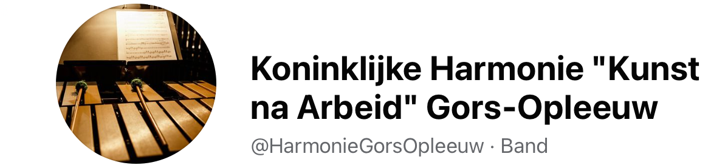
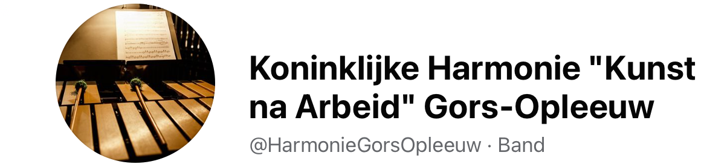

Welkom
De Koninklijke Harmonie Kunst Na Arbeid uit Gors-Opleeuw werd als fanfare opgericht in 1895 en kende zoals de meeste muziekverenigingen een bewogen levensloop met hoogten en dalen. In 1988 werd de vereniging bijna ontbonden om na een doorstart toch in 1995 het 100-jarig bestaan te vieren.
Eind jaren 90 kwam een nieuw elan onder impuls van de nieuwe -toen slechts 18-jarige- voorzitter Jan Herbots en toenmalig dirigent Raf Toté. De fanfare werd omgevormd tot harmonie en dankzij een jong, fris repertoire begon het ledenaantal sterk te groeien. In 20 jaar tijd, onder leiding van dirigenten Raf Toté, Geert Leus en huidige dirigent Dries Wouters, legde de harmonie een mooi parcours af: het ledenaantal en het muzikaal niveau bleef stijgen en het orkest werd een referentie in de streek. Op het jaarlijks galaconcert wordt elke keer gekozen voor een uitdagend concept. Zo werkten we samen met verschillende artiesten, voerden we de symfonie “Lord Of The Rings” uit met een zandkunstenaar, verzorgden we live de muziek bij een half uur durende film van Charlie Chaplin, en traden we op samen met twee paaldanseressen. Er werd ook deelgenomen aan wedstrijden met als hoogtepunten het behalen van de gouden medaille op een international concours te Praag en de kampioenstitel in ere-afdeling voor de categorie harmonie op de nationale wedstrijd van VLAMO.
Onze vereniging is de laatste 20 jaar uitgegroeid tot een gezonde vereniging van een kleine 50-tal leden. We zijn een hechte groep waar iedereen zowel een muzikale uitdaging als een leuk tijdverdrijf kan vinden.
Onze repetities gaan door in zaal De Leeuwerik. U bent welkom elke vrijdagavond van 20-22u als muzikant, sympathisant, of gewoon om van het mooie uitzicht over Gors-Opleeuw te genieten samen met een geweldige vriendengroep.
Interesse om mee te spelen? Contacteer ons!
 

Contactgegevens
Zetel:Mellenstraat 52C, 3840 Gors-Opleeuw
Email: kh.kna.gorsopleeuw@gmail.com
Telefoon: +32 (0)486 40 77 74
Ondernemingsnummer: BE04 7755 6437
Privacyverklaring
Als bezoeker van deze website verwerken wij geen persoonsgegevens, noch slaan we enige persoonlijke informatie op.
Voor leden van onze vereniging verwerken we wel persoonsgegevens -- onze privacyverklaring kan u via deze link downloaden.